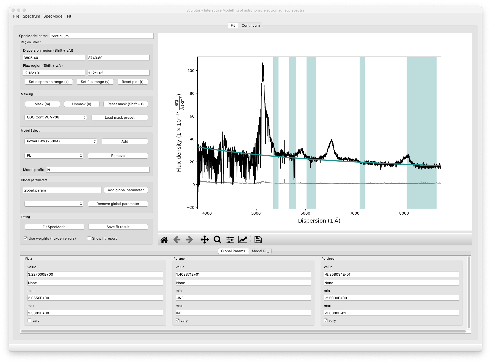
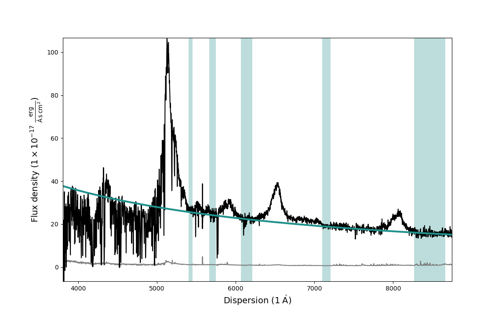
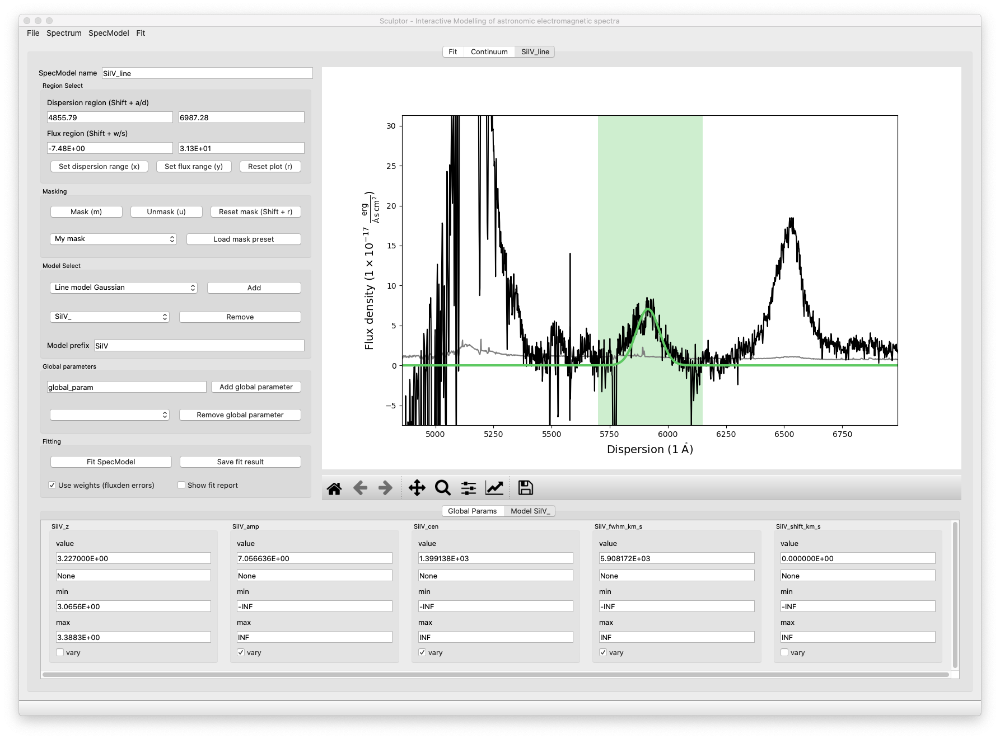
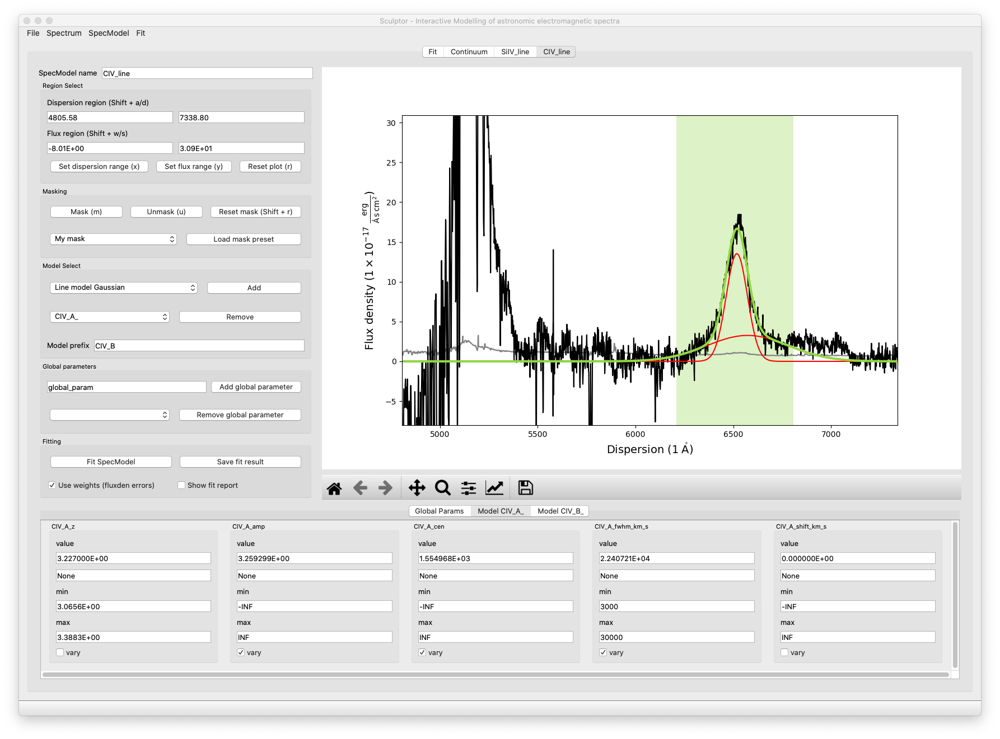
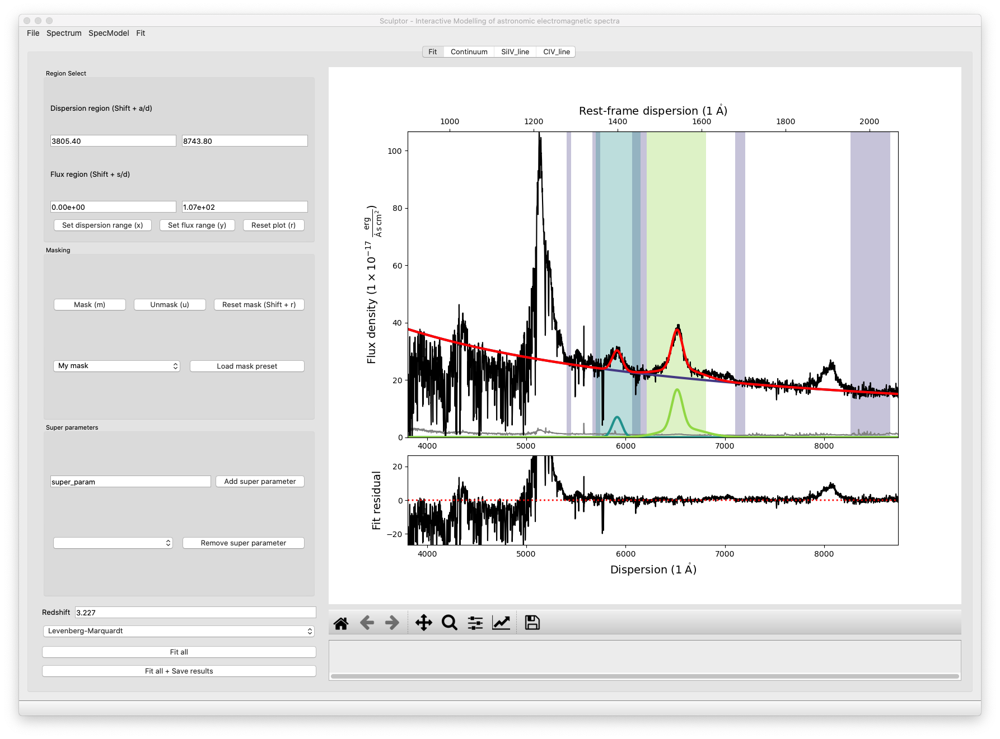
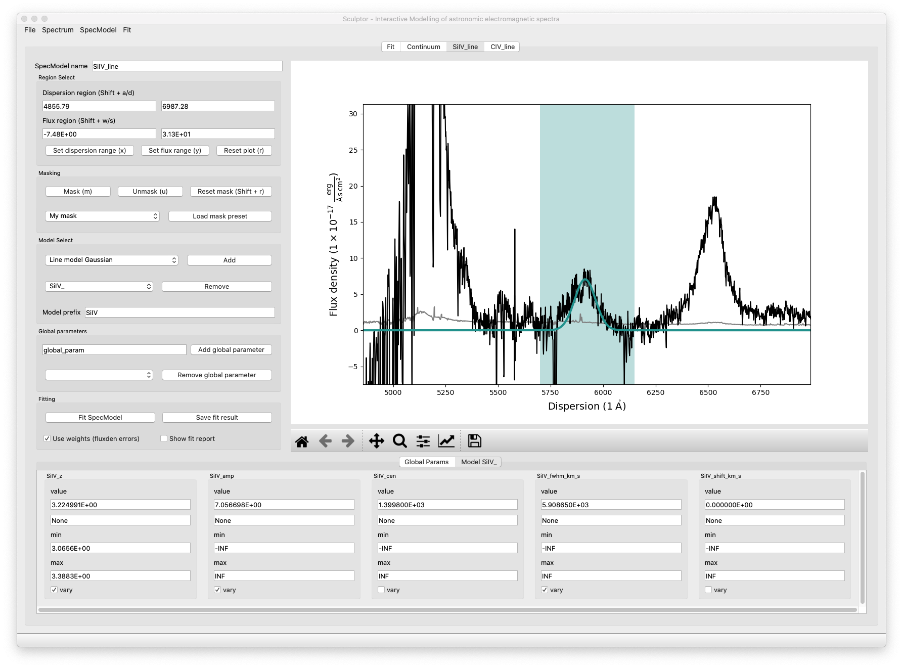

Spectral fitting with the Sculptor GUI
In this example we will fit the SDSS spectrum of quasar J030341.04-002321.8 at redshift z=3.227 step by step. The example is aimed at first time users to provide insight into the Sculptor workflow and is designed to present a starting point.
We will begin by starting up sculptor with the example spectrum already imported:
run_sculptor --example=True
The GUI will start with the SpecFit tab open displaying the quasar spectrum.

1-The quasar continuum model
In this example we will be working with the Sculptor basic models and the models defined in the Sculptor extension qso.py, which were specifically included for this example.
Steps
Start by adding a SpecModel and naming it Continuum.
Select the mask QSO Cont.W. VP06, which refers to quasar continuum regions according to the paper by Vestergaard & Peterson 2006.
Add the Power Law (2500A) model with the prefix PL
Click on Fit SpecModel for a first fit.
At this point the GUI showing SpecModel tab named Continuum should look like this:
{kind=link}
Now we can interactively adjust the masked-in fit regions to exclude absorption and emission features and refit the spectrum again. Our final fit looks slightly better now:
{kind=link}
2-Modeling the SiIV emission line
We will now add a model for the SiIV emission line at ~5900A observed frame with one Gaussian.
Steps
Start by adding a another SpecModel and naming it SiIV_line.
Manually enter 5700 / 6150 into the dispersion region windows and apply with Enter.
Click m to mask the specified dispersion region.
Add the Line model Gaussian model with the prefix SiIV.
Enter 1399.8 into the SiIV_cen value field and apply the change with Enter.
Click on Fit SpecModel to fit the line.
Note that the redshift (SiIV_z) and the velocity shift (SiIV_vshift) parameters have set default values used in the fit, but will not be fit themselves by default (vary checkmark is not enabled). You could choose to vary these parameter instead. However, if more than one of the three parameters (SiIV_z, SiIV_cen, SiIV_vshift) is set to vary, this will cause problems with the fit as they are degenerate.
The final SiIV fit will look something like this:
{kind=link}
3-Modeling the CIV emission line
We have now successfully modeled the SiIV line. Let us do the same for the CIV line, but this time we will approximate it using 2 Gaussian models.
Steps
Start by adding a another SpecModel and naming it CIV_line.
Manually enter 6210 / 6810 into the dispersion region windows and apply with Enter.
Click m to mask the specified dispersion region.
Add the Line model Gaussian model with the prefix CIV_A (component A).
Add the Line model Gaussian model with the prefix CIV_B (component B).
Enter 1549.06 into the CIV_cen value field for both models and apply the changes with Enter.
Navigate into the CIV_A model tab and restrict the CIV_A_FWHM values in the range of 2000 to 10000, then hit Enter to apply.
Navigate into the CIV_B model tab and restrict the CIV_B_FWHM values in the range of 300 to 3000, then hit Enter to apply.
Click on Fit SpecModel to fit the line.
Check the fit results, specifically the FWHM values. You will find that the fit reached the maximum value you specified. This means that you should probably relax the upper FWHM boundary.Choose *CIV_A_FWHM* max=30000, and *CIV_B_FWHM max=8000* for now an click on *Fit SpecModel* again. The resulting fit should be a better approximation of the line.
The final fit of the CIV SpecModel will look similar to this:
{kind=link}
You can also navigate to the SpecFit tab (“Fit”) and look at the total fit to the quasar spectrum:
{kind=link}
In the lower panel of the figure in the SpecFit tab you will also see the fit residual after all your models have been subtracted.
4-Saving and loading model fits
If you are happy with your first fit, you can save the model and the fit results.
Steps
In the start menu click File->*Save*. This will open an file dialog.
Create a new directory (e.g., you can name it myfirstfit)
Save your model by clicking Open in the file dialog bottom right corner.
Following this example Scuptor created four model files ([SpecModel Index]_[prefix]*_model.json *) for the *PL_, the SiIV_, the CIV_A_, and the CIV_B_ model as well as three result files ([SpecModel Index]_fitresult.json). The SpecModel Index in our example runs from 0-2 over the “Continuum”, “SiIV line”, “CIV line” SpecModels. The fit.hdf5 file holds further information important for the SpecFit class and the SpecModel classes, including the spectrum itself.
You can now try to exit Sculptor and then open the Sculptor again:
run_sculptor
This should bring up an empty Sculptor GUI. To load your previously saved model click File->*Load* and select the folder, where you saved the model.
5-Fitting the SiIV line redshift
Previously we have allowed the central wavelength of the SiIV line to be the varying parameter. To calculate the redshift of the SiIV line we can calculate the offset between the fitted central wavelength and 1399.8 A. However, with the Gaussian model we have used, we can directly fit the redshift parameter.
Steps
Navigate to the SiIV line SpecModel tab and to the Model SiIV_ parameters at the bottom.
Set the value for SiIV_cen to 1399.8 and disable vary for the parameter.
Then enable vary for the SiIV_z parameter.
Click on Fit SpecModel to fit the line.
Now the redshift parameter was fit, while the central wavelength was considered constant:
{kind=link}
6-A full fit of the example spectrum
We provide a full fit of the example spectrum in the sculptor/examples directory with the name example_spectrum_fit. We invite you to load this fit into Sculptor and explore the use of the Global parameters as well as the fitting of absorption lines.